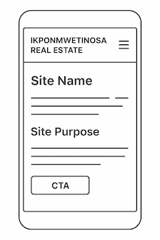
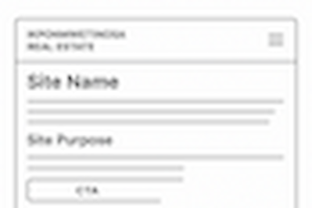

Site Name
IKPONMWETINOSA Real Estate
This name represents a personalized and trustworthy real estate brand focused on property sales, rentals, and land opportunities. It is unique, professional, and easy for clients to remember.
Optional domain: ikponmwetinosaestate.com
Site Purpose
The purpose of this website is to showcase available real estate listings, including houses for rent, land for sale, and property investment opportunities. The site also provides direct contact options for inspections and inquiries.
Scenarios
- Where can I find available houses for rent in Benin City?
- How do I contact the real estate agent for property inspection?
Color Scheme
Primary Color: Deep Blue (#1A4D8F)
Accent Color: Gold (#E8A317)
Usage:
- Headings and titles: Primary color
- Buttons and accents: Gold
- Body text: Dark gray
- Page backgrounds: Light neutral colors
Typography
Heading Font: Poppins
Body Font: Roboto
Poppins will be used for section headers and titles, while Roboto will be used for all body text to ensure clear readability.
Wireframes
Mobile View

Desktop View

The wireframes show the planned layout of the home page for both mobile and desktop screen sizes. These sketches describe structure, not final design.